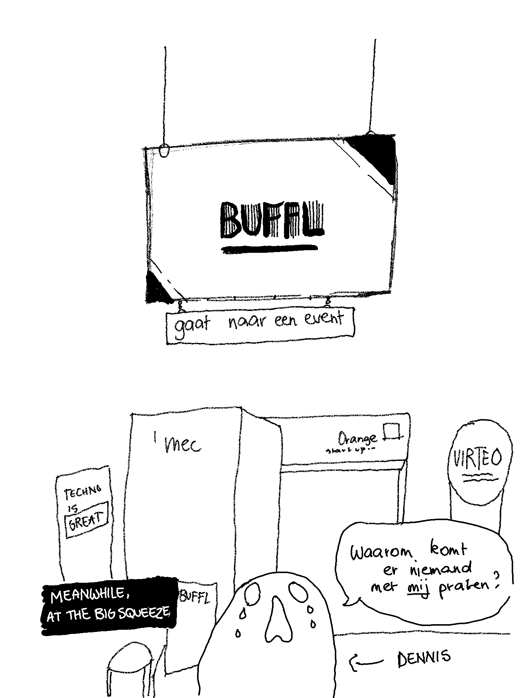
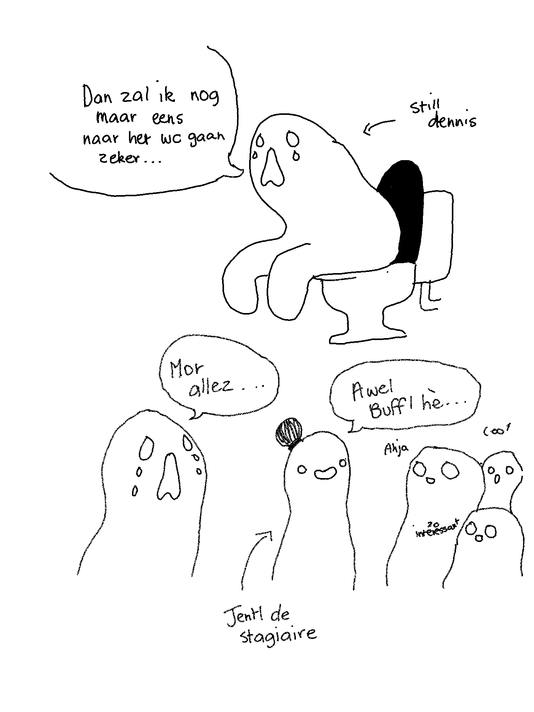
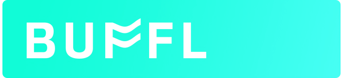

Jentl loopt stage.
verslag van een multimedia studente
Over Jentl
De Blog
Mijn Portfolio
18 februari 2019
Mijn eerste dag op mijn stageplek verliep waarschijnlijk zoals eerste dagen op stageplekken doorgaans verlopen. Met veel rondkijken, verloren lopen in het kantoorgebouw, niet goed weten wat doen of wie je nu exact moet lastig vallen om te weten wat je moet doen, en dergelijke.
Maar het was ook de dag van de eerste meeting, en meteen de bevestiging dat ik met goede reden ervoor gekozen heb om in een kleine start-up mijn stage te doen. Er was ruimte voor een lach en een babbel, iemand voorzag ontbijt omdat hij vorige week zijn deadlines niet gehaald had, anderen waren opgelucht dat ze geen pannenkoeken zouden moeten bakken omdat ze de hunne wél gehaald hadden, en het gemoed lag, voor een maandagochtend, zeer hoog.
De prioriteiten van de dag lagen erin gekend te geraken met de tools die het team gebruikt om te plannen en communiceren, en met BUFFL zelf. Veel ervan had te maken met UX en back-end development, zaken waar ik mijn weg (nog) niet goed in ken, maar die me als multimedia student wel interesseren. Het was de herkenbare chaos van ergens nieuw beginnen; een overrompeling aan nieuwe informatie en mini-paniekaanvallen bij het zien van de waterval aan folders op de gemeenschappelijke drive.
Maar na de middag kwam de eerste opdracht, en mijn eerste houvast: een simpele animatie van hun logo voor het laadscherm van de app en dergelijke.
Zoals herkenbaar is voor eender welk project in After Effects doe je de eerste 90% op tien minuten, en spendeer je dan twee uur met het zoeken naar redenen waarom de overige 10% niet doet wat het hoort te doen.
Maar, de aanhouder wint, en nu weet ik exact hoe een sinusgolf te manipuleren om een mooie ‘vlag’-animatie te maken zoals hieronder. Nu nog de dertigduizend codecs trotseren om er een te vinden die wél alpha kanalen ondersteunt, maar niet de omvang heeft van een kleine Afrikaanse natie.
For future reference, toekomstige projecten die het delen waard zijn zullen onder de tab ‘Portfolio’ terug te vinden zijn.
20 februari 2019
Vandaag bevonden mijn mede-stagiair en ik ons in de stoeltjes van de stadscampus van de Universiteit Antwerpen. Waarom? Om een lezing bij te wonen van een van onze BUFFL collega’s, die de studenten kwam vertellen over marktonderzoek, en er tussendoor goed wat reclame voor BUFFL tussensmeet. Win-win voor iedereen.
Mijn ordelijk notitiesnemen is wel nog steeds een werkpunt.

’s Ochtends was voor me echter een lang en ergerlijk geknoei met codecs en vijf verschillende programma’s om uiteindelijk dan toch te eindigen met een transparante, smoothly looping GIF. Maar hiphoi, de aanhouder wint, en met een mooie grootte van zo’n dertig megabyte (wetende dat ik van een whopping 1,92 gigabyte kwam) heeft BUFFL nu eindelijk een animatie voor hun laadscherm.
Ik hoop dat ze volgende week niet van logo veranderen.
23 februari 2019
Er worden plannen gemaakt. Ho ho. Plannen. Aanschouw, de volheid van mijn agenda.

Projecten beginnen stilaan vorm te krijgen. Het is niet meer proberen mijn uren op kantoor gevuld te krijgen, maar ze op zo’n wijze proberen in te passen dat alle deadlines worden gehaald met ruimte voor feedback and foutcorrecties. Voorlopig is het nog niet overweldigend. Alles blijft overzichtelijk en concreet, en hoewel de doelstellingen uitdagend zijn zijn ze tegelijkertijd haalbaar.
Afgelopen donderdag werden ik en Lom, de mede-stagiair, meegenomen naar het Wagenoord in Mechelen, waar op dat moment een hackathon event plaatsvond georganizeerd door The Forge, en waar Buffl mee een hand in had. Het doel was dat de aanwezige Thomas Moore studenten projecten in elkaar staken om het huidige pakjesafleversysteem in Mechelen te verbeteren. Deze projecten moesten binnen een span van 48 uur uitgewerkt en gepitchd worden, en daarvoor waren wij ter plaatse.
Onze stagebegeleider van Buffl maakte snelle productschetsen van hun ideeën, Lom nam de pitchen op en bezorgde mij de audiotracks, en ik goot dat alles in een filmpje, samen met een snel geanimeerde intro en outro. En dat voor twaalf verschillende groepen. Op enkele uren tijd.

Het was de eerste keer dat ik zo tegen een deadline moest werken, en dit, komende van een student, kan al wat betekenen. Alles moest snel gaan, geen tijd voor pauzes. Er moest snel een efficiente oplossing gevonden worden voor het probleem, en dan uitgevoerd worden. Het was hectisch. Het was chaos. Het was een van de leukste dingen die ik ooit al gedaan heb. Doorwerken tot middernacht en dan de volgende ochtend vroeg uit de veren om verder te werken en alles af te ronden.
28 februari 2019
The Big Squeeze.
Een start-up event waarin allerlei start-ups (go figure) een standje bemannen en potentiële investors informeren over hun idee/bedrijf. En de allereerste keer dat Jentl grondig werd ondergedompeld in de wereld van pitchen.
Het concept van een pitch was me nu niet bepaald vreemd, vorig jaar had ik het voor een vak moeten doen, en had ik dus wel geleerd over de do’s en don’ts. Maar dat was in de context van een presentatie geven voor een jury. Op de Big Squeeze was het allemaal veel interactiever. Mensen kwam naar je standje toegeschuifeld, nieuwsgierig rondsnuffelend, en stelden vragen.
Het was niet dat ik voor de leeuwen werd gesmeten, ik bemande samen met een collega ons tafeltje en bijbehorende iMac (gil, mijn Powerpoints kloppen niet meer). Maar om de een of andere vreemde reden werden we alleen benaderd wanneer deze even om koffie ging of om andere redenen korttijdig verdween. We zullen hier maar geen conclusies uit trekken, Dennis.
Wel opmerkelijk hoe het me eerst met veel gestotter en gestrompel afging, maar ik er uiteindelijk toch in sloeg om mensen vlot te vertellen over wat BUFFL deed, zonder dat steeds te moeten afsluiten met ‘sorry, ik werk hier nog niet lang’.
En in de down momentjes kon ik met wat amuzeren met de reMarkable van Dennis. Tof ding. (reMarkable, give me money)
 1 maart 2019
Toen ik voor de specialisatierichting Audio Video koos was ik, zoals menige mensen in die richting, opgelucht dat dit zou inhouden dat het programmeren en coderen tot een minimum zou gehouden worden, of toch zeker in contrast met de zware lading programmeertalen binnen de andere afstudeerrichtingen die zich focussen op web design of game development.
Enter After Effects expressions.
Ze zijn er om je leven gemakkelijker te maken dat is zo. In plaats van met expliciete keyframes te werken kan je expressions gebruiken binnen After Effects om zo de animaties te manipuleren. De wiggle() expression bijvoorbeeld zorgt ervoor dat de waarden van een bepaalde property van een bepaalde laag constant en willekeurig veranderen. Zo kan je een object constant laten heen en weer wentelen door de wiggle() toe te passen op de rotation property. Boom. Bespaart je de uren die het je zouden gekost hebben om al die willekeurige wenteling manueel te keyframen.
Maar expressions blijven code. En samen met code komt de constante ‘oh-god-oh-god-why-is-it-doing-that’ vrees. Neem het onderstaand blokje bijvoorbeeld.
x = thisComp.layer("Null 1").effect("Slider Control")("Slider");
temp = linear(x,0,500,0,30);
[temp, temp, temp]

Vrij voor de hand liggend stukje code, but code nonetheless.
En vanaf er code in je project komt gaan dingen zich niet altijd gedragen zoals je verwacht. Lagen die in het rond beginnen springen of helemaal verdwijnen, of die om de een of andere reden dan toch gekeyframed zijn om van positie te veranderen.
Volgen we dan de eeuwenoude (behalve niet echt) leuze van After Effects: doe tien minuten efficiënt werk, en spendeer dan de komende uren om een fout te corrigiëren waarvan je de oorsprong niet vindt.
5 maart 2019
Waarom expressions dus wel degelijk zijn nut hebben. Het onderstaande 'particle effect' zou eindeloos veel werk zijn om manueel te maken, tot het onmogelijke toe.
4 maart 2019
Het grote project van deze stage: het youtube kanaal van Buffl nieuw leven inblazen met een serie over ‘thought leadership’, een concept waar ik tot vandaag nog weinig tot niets over had gehoord. Concreet houdt het in dat we met Buffl een reeks filmpjes lanceren die allerhande aspecten van marktonderzoek, het veld waarin zij gespecialiseerd zijn, uitleggen en nader bespreken. Het hele idee is dat kennis geloofwaardigheid schept, wat dan op zich weer vertrouwen kweekt bij zowel huidige als toekomstige klanten.
Het thought leadership project geeft me alleszins de kans om te leren hoe videoproductie voor social media het beste werkt. Van inhoud tot vorm. Voor sociale media horen videos doorgaan erg kort en straight to the point te zijn, en dat is ook het idee voor deze reeks. Geen langdradige filmpjes met diepgaande exposities over de verschillende facetten van marktonderzoek, maar eerder een korte en bondige filmpjes met een hoge toegankelijkheid voor leken, die visueel aantrekkelijk zijn maar tegelijkertijd budgetvriendelijk, en waarvan we er veel op een korte tijd kunnen produceren en dan de verdeling ervan spreiden over meerdere weken zodat er met regelmaat en consistentie updates kunnen plaatsvinden.
Jongens wat een zin, ik moet er zelf even van bekomen. Hier een schattige kat-GIF om daarbij te helpen.
Hoe dan ook gaat dit een moment zijn voor me om mijn audiovisuele kunnen te testen. Beslissingen zullen moet worden gemaakt aangaande materiaal, locatie, en dergelijke. Ik kijk nog steeds het meeste uit naar het post-productie aspect ervan, van het zoeken en creëren van leuke graphics om het geheel te ondersteunen en interessanter te doen ogen. Maar het zal ook fijn zijn om nog eens achter een camera te staan.
7 maart 2019
Vandaag gingen we langs bij de jongens van ZMO (Zoals Meestal Ongepast), een klein onafhankelijk productiehuis in Antwerpen (en onder meer de creators van de KdG dreams reeks, kleine wereld). Zij gaan Buffl helpen met het in elkaar steken van een promofilm. Het idee is tweezijdig: aan de ene kant een identity film, die hoort weer te geven waar Buffl voor staat, hun brand en hun kernwaarden. Het moet appealen eerder dan uitleggen, daarvoor is het tweede luik, een film die op de consumer gericht is en die uitlegt wat Buffl juist is, waarvoor het gebruikt kan worden, etc.
Het was interessant om te zien hoe een klein productiehuis met hun klanten werkt. Er is veel ruimte voor samenwerking en inbreng van de klant. Eerder dan dat ZMO een kant en klaar pakketje afleverde was er een brainstormsessie met drie leden van Buffl en twee van ZMO (die ik ook mocht bijwonen).
We kwamen samen in hun kantoor op de Ankerrui, een gezellig industrieel ogende loft die ze deelden met een ander bedrijf, maar met comfortabele zetels, Senseo koffie en een groot whiteboard dat we gebruikten om alle ideeën op te schrijven. We begonnen met de waarden waarvan we vonden dat ze Buffl representeerden. Impact, verandering, dynamisch.
Daarnast werd er nagedacht over hoe dit allemaal in beeld zou worden gebracht. Ideëen als dynamiek konden simpelweg geïntegreeerd worden met behulp van dynamische camera’s en vlotte overgangen. Er werd nagedacht over een rode draad, over de verhaallijn en de sfeerbeelden, hoe we dit allemaal best in beelden konden uitdrukken. We bespraken de juiste voice over opties.
Aan het einde van de sessie stond het bord volgekrabbeld met ideëen, gaande van concrete scenes tot hele vage begrippen. Maar er was een beeld geschept van wat we wouden, en wat ZMO als haalbaar zag.
De opnames zelf beginnen later, en fingers crossed dat ik tijd heb om ze bij te kunnen wonen!
13 maart 2019
Vandaag was druk. Omdat er last minute requests van klanten zijn binnengekomen met nogal strakke deadlines moest alles snel gaan. We vlogen naar Hasselt om van daaruit te werken omdat onze klant zich daar bevond. Om wat in de juiste mindset te geraken laten we zeggen.
Alzo kwam ook mijn eerste klantenfrustratie. Voor een enquête moest een introductiefilmpje gemaakt worden om aan het begin van de survey te zetten waarna consumenten vragen moesten beantwoorden om te polsen of het concept duidelijk was, of het iets was waar ze interessse in hadden.
Het videomateriaal was een youtubeclip die ik gedownload kreeg opgestuurd en moest bewerken, simpelweg door er captions op te zetten met tekst. Behalve dan dat het filmpje al Engelstalige tekst had. En dat de captions helemaal niet overeenkwamen met wat in beeld getoond werd.
Dan begint de talen/multimedia student in mij al zachtjes te kermen. Maar geen vragen stellen. Het is wat de klant wilt.
Vijf minuten bezig en dan, stop, ho, wacht, de klant wilt toch een ander filmpje. Deze keer eentje met hardcoded ondertitels en een constant lopende muziektrack onder het interview. En het is te lang dus het moet getrimd worden naar maar de helft van wat het nu is. Al een geluk dat het een redelijk repetitieve track is en dat crossfades in Premiere Pro bestaan. En kijk, weer een hotkey bijgeleerd.
Ik heb er wel vaak van gehoord van zulk soort klachten. Veel van studenten grafische vormgeving, maar ik vermoed dat het binnen elke sector wel vermoeiend zal zijn om met leken om te gaan die niet snappen ‘waarom je dat niet even snel doet’. Montage lijkt zo’n simpel knip-en-plakwerk, zeker als iemand het lekker vlot kan. In werkelijkheid is het een grote puzzel. Het is hetgene wat me destijds ook aantrok aan audiovisuele vertalingen maken. Werken met tekst binnen beperkingen van tijd en ruimte is gewoon puzzelen. Wat blijft, wat laat je vallen, wat kan korter, wat mag zijn lengte behouden, welke opofferingen maak je. Zo gaat het met montage uiteindelijk ook. Kill your darlings. Al is het ietsje lastiger als het over iemand anders’ darlings gaat. Want wanneer probeer je hen duidelijk te maken dat hun idee een slecht idee is, en wanneer geef je ze gewoon waar ze om vragen?
Gelukkig moet ik me met dat morele dilemma als stagiaire dan toch nog niet al te veel mee bezig houden.
Oh ja, en ik heb een e-mail signature gemaakt wat me echt naar de donkerste hoeken van de Gmail settings heeft gedreven, maar dat kan ik dan toch ook weer al. Look at that tiny wavy F.
14 maart 2019
Oh God, op dit ding heb ik gevloekt.
Dit was een klassiek voorbeeld van vastzitten in After Effects met een dilemma. Namelijk, je hebt je assets verkeerd aangepakt. Die ene doorlopende lijn was misschien beter opgedeeld geweest in verschillende stukken die elks afzonderlijk kunnen gemanipuleerd worden.
Krijg je het nog gefixt, of moet je helemaal opnieuw beginnen.
Het lijkt zoiets simpel, animeer een grafiek zodat hij van dit ...
... naar dit gaat.
Sinds week één ben ik bezig geweest aan dit rotding, denkende dat het me een uurtje of twee zou kosten om het te doen, maar ja, dan beginnen de problemen zich op te stapelen, uiteraard.
Namelijk:
Uiteindelijk na veel zoekwerk heb ik het gevonden.
After Effects heeft sinds een recente update vorig jaar een nieuwe functie toegevoegd, de wonderlijke “create nulls from paths” optie. Wat, als ik het eerder had doorgehad, ervoor gezorgd zou hebben dat ik de doorlopende lijn van de grafiek niet in afzonderlijke dingen van punt tot punt had moeten opsplitsen maar de lijn gewoon daadwerkelijk in zijn geheel kan manipuleren. En dat alles op zijn plek blijft. En de lijn niet vervormt.
Door “path follows nulls” toe te passen op een gegeven path (in dit geval de lijn van de grafiek) kan je door de nulls te manipuleren de lijn aanpassen. Nulls. De oplossing is altijd nulls. Simpelweg de punten ook linken aan de nulls en hop, verslepen maar, en de lijn volgt netjes, en past de stippellijn aan naargelang waar de null zich bevindt. Like magic. Weer iets bijgeleerd om je leven als motion designer eindeloos makkelijker te maken.
15 maart 2019
Wanneer je je blog toont aan je collega’s en de developer besluit zich te amuzeren met de Google Chrome console.

Zeer grappig, Irfan.
1 april 2019
De client page heft wat leuke visuals nodig. Gelijkaardig aan de graph die ik al geanimeerd heb zouden er ook wat animaties moeten zijn om de inlogpagina wat op te vrolijken en tegelijkertijd een beeld geven van wat de tool juist doet.
Ik heb best wat vrijheid gekregen wat dat betreft, en hoewel ik dat in eerste instantie altijd leuk vind omdat ik me dan creatief kan laten gaan, heb ik al bij mezelf gemerkt dat ik beter en efficiënter werk als ik wat richting krijg.
Maar het is leuk om in dit stadium nog te experimenteren met wat After Effects allemaal kan. Mijn controle over bezier curves begint beter te gaan, animatie wordt vlotter. Het is fijn om te zien hoe op een regelmatige basis aan After Effects projecten te werken zijn vruchten begint af te werken. Ik werk stilaan efficienter en kom sneller op oplossingen voor bepaalde problemen.
Alles begint natuurlijk met enkele schetsen en een storyboard.